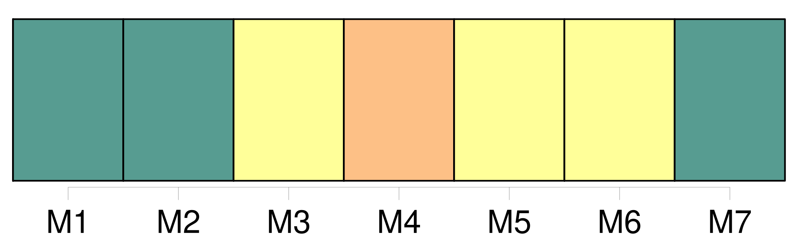

Longueur nb maillons : 30 mentions |
  |
De la Tutelle des Père et [Mère] [4 phrases]
Après la dissolution du mariage arrivée par la mort naturelle ou civile de l'un des époux, la tutelle des enfans mineurs et non émancipés appartient de plein droit au survivant des père et [mère] [1 phrases]
Pourra néanmoins le père nommer à [la mère survivante] et tutrice un conseil spécial sans l'avis duquel [elle] ne pourra faire aucun acte relatif à la tutelle. [6 phrases]
Si, lors du décès du mari, [la femme] est enceinte, il sera nommé un curateur au ventre par le conseil de famille.
À la naissance de l'enfant, [la mère] en deviendra [tutrice] , et le curateur en sera de plein droit le subrogé tuteur. [1 phrases]
[La mère] n'est point tenue d'accepter la tutelle néanmoins, et en cas qu' [elle] la refuse [elle] devra en remplir les devoirs jusqu'à ce qu' [elle] ait fait nommer un tuteur. [1 phrases]
Si [la mère tutrice] veut se remarier, [elle] devra, avant l'acte de mariage, convoquer le conseil de famille qui décidera si la tutelle doit [lui] être conservée.
À défaut de cette convocation, [elle] perdra la tutelle de plein droit ; et [son] nouveau mari sera solidairement responsable de toutes les suites de la tutelle qu' [elle] aura indûment conservée.
396 [1 phrases]
De la Tutelle déférée par le Père ou [la Mère]
397 [6 phrases]
Le tuteur élu par le père ou [la mère] , n'est pas tenu d'accepter la tutelle, s'il n'est d'ailleurs dans la classe des personnes qu'à défaut de cette élection spéciale le conseil de famille eût pu en charger. [3 phrases]
Lorsqu'il n'a pas été choisi au mineur un tuteur par le dernier mourant de ses père et [mère] , la tutelle appartient de droit à son aïeul paternel ; à défaut de celui -ci, à son aïeul maternel, et ainsi en remontant, de manière que l'ascendant paternel soit toujours préféré à l'ascendant maternel du même degré. [7 phrases]
Lorsqu'un enfant mineur et non émancipé restera sans père ni mère, ni tuteur élu par ses père ou [mère] , ni ascendans mâles, comme aussi lorsque le tuteur de l'une des qualités ci-dessus exprimées se trouvera ou dans le cas des exclusions dont il sera parlé ci-après, ou valablement excusé, il sera pourvu, par un conseil de famille à la nomination d'un tuteur. [11 phrases]
Lorsque les parens ou alliés de l'une ou de l'autre ligne se trouveront en nombre insuffisant sur les lieux, ou dans la distance désignée par l'article 407, le juge de paix appellera, soit des parens ou alliés domiciliés à de plus grandes distances, soit, dans la commune même, des citoyens connus pour avoir eu des relations habituelles d'amitié avec le père ou [la mère du mineur] [90 phrases]
Les femmes, autres que [la mère] et les ascendantes ; [33 phrases]
Les père et [mère] , tant qu'ils ont la jouissance propre et légale des biens du mineur, sont dispensés de vendre les meubles, s'ils préfèrent de les garder pour les remettre en nature. [3 phrases]
Lors de l'entrée en exercice de toute tutelle, autre que celle des père et [mère] le conseil de famille réglera par aperçu, et selon l'importance des biens régis, la somme à laquelle pourra s'élever la dépense annuelle du mineur, ainsi que celle d'administration de ses biens. [6 phrases] Le tuteur, même le père ou [la mère] , ne peut emprunter pour le mineur, ni aliéner ou hypothéquer ses biens immeubles, sans y être autorisé par un conseil de famille. |
La ressource peut être téléchargée sur la page Ortolang
Si vous avez des questions ou vous voyez des erreurs, merci d'envoyer un mail à silvia.federzoni89@gmail.com
Site développé par S. Federzoni (contact)